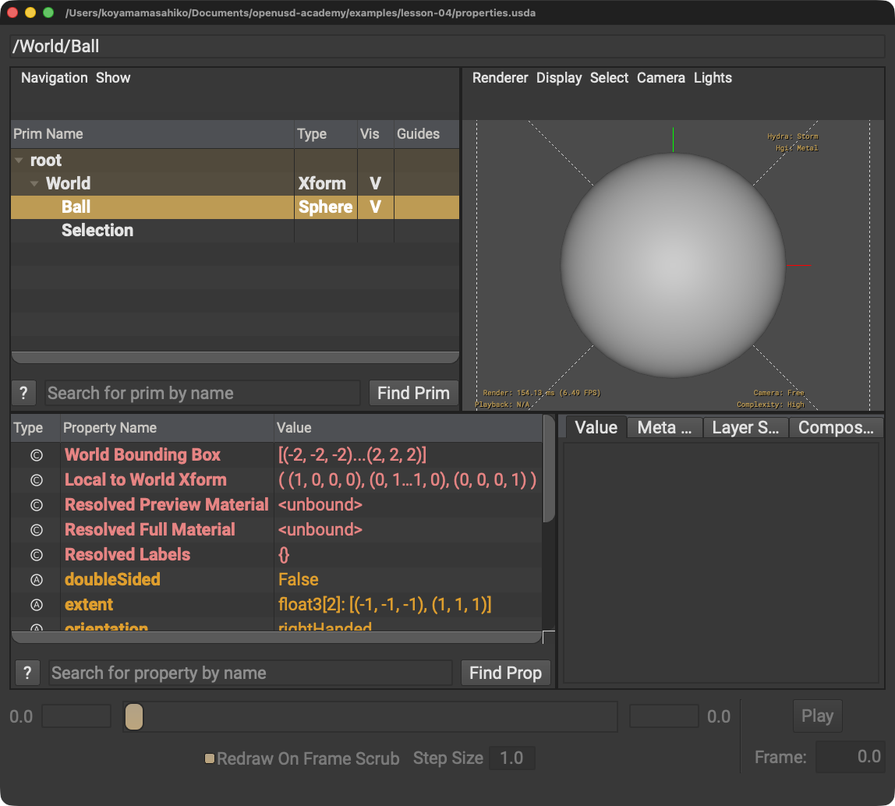

Relationshipに数値を直接入れる
Relationshipが持つのは対象Pathです。数値はAttributeで表します。
LESSON 04 · FOUNDATIONS
値を持つ情報と、別の対象を指すつながりを読み分けます
今日これだけ
公式情報に基づく説明
Attributeは名前と一つのデータ型を持つ値です。Relationshipは型のないPropertyで、0個以上のPrim PathまたはProperty Pathを対象として持てます。どちらもPrimに属するPropertyですが、値と接続という役割が異なります。
USDA
#usda 1.0
def Xform "World"
{
def Sphere "Ball"
{
double radius = 2
}
def "Selection"
{
custom rel members = </World/Ball>
}
}doubleは小数を扱える数値型、radiusはAttribute名、=は右の値を指定する記号です。customはカスタムProperty、relはRelationship、membersはその名前です。山括弧 < > は対象Pathを囲みます。

BallとSelectionが並びます。BallのradiusはAttribute、SelectionのmembersはBallを指すRelationshipです。Diagram
Python
from pxr import Usd, UsdGeom
stage = Usd.Stage.CreateNew("properties.usda")
UsdGeom.Xform.Define(stage, "/World")
ball = UsdGeom.Sphere.Define(stage, "/World/Ball")
ball.CreateRadiusAttr(2)
selection = stage.DefinePrim("/World/Selection")
members = selection.CreateRelationship("members", custom=True)
members.SetTargets([ball.GetPath()])
stage.Save()CreateRadiusAttr(2)はSchema APIでradius Attributeを作ります。CreateRelationshipはRelationshipを作り、SetTargetsで対象を設定します。角括弧 [ ] はPythonのリストで、ここではPathを一つ入れています。
USDA → Python mapping
USDA
double radius = 2↓Python
ball.CreateRadiusAttr(2)USDA
custom rel members = </World/Ball>↓Python
members.SetTargets([ball.GetPath()])Beginner notes
よくある間違い
Relationshipが持つのは対象Pathです。数値はAttributeで表します。
USDAのRelationship対象は </World/Ball> のように山括弧で囲みます。
型付きSchemaが提供するAttributeは、公式ガイドの推奨どおりSchema固有APIを優先します。
Glossary
Official references
確認日: